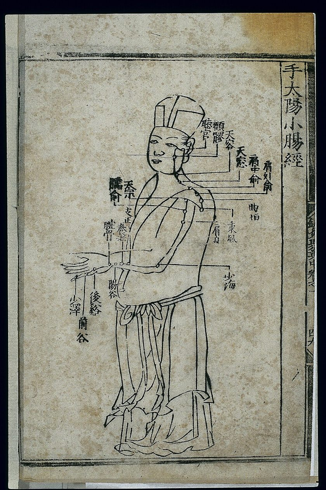

手太陽小腸経 ― 走行と経穴
手太陽小腸経は、小腸に属し、手少陰心経と表裏をなす手の太陽（陽経）の経です。経穴は19穴。気の流注（巡りの順序）では「未の刻（13〜15時）」にこの経へ気が注ぐと伝統的に配当されています。このページでは、走行・所属経穴のすべて・流注と表裏・実践での位置づけを整理します。
走行

小腸経は小指の外側の少沢から起こり、腕の外側の後縁を上って肩に達し、肩甲骨の上を巡ります。天宗は肩甲骨の中央のくぼみにあります。そこから頸を上って頬に至り、耳の前の聴宮に終わります。体内では心に属する心経と表裏をなし、小腸に属します。肩甲骨を大きく巡る走行が特徴です。
流注と表裏
十二経の流注は、肺経から始まって肝経で終わり、また肺経へ戻る循環です。手太陽小腸経の前は手少陰心経、次は足太陽膀胱経です。表裏の関係にある手少陰心経とは、体表と体内の浅深で対をなし、互いに影響し合うと伝統的には考えられてきました。時刻への配当の考え方は「子午流注」で解説します。
所属経穴の一覧（全19穴）
手太陽小腸経に属する経穴は全部で19穴あります。主要な穴だけを抜き出すのではなく、流注の順にすべてを挙げます。番号は国際的に使われる経穴コード（経絡の略号と通し番号）です。「特定穴・伝統的な位置づけ」の欄には、五輸穴・原穴・絡穴・郄穴・募穴・背兪穴・八脈交会穴・八会穴・下合穴・交会穴といった分類と、その穴が伝統的にどう位置づけられてきたかを記しました。特定穴の体系そのものは「五輸穴」「特定穴の考え方」「八会穴と八脈交会穴」で解説しています。
| 番号 | 経穴（読み） | 位置 | 特定穴・伝統的な位置づけ |
|---|---|---|---|
| SI1 | 少沢（しょうたく） | 小指の爪の付け根、外側の角の際に取る。 | 五輸穴の井穴（金）。小腸経の起点で、心経から流注を受け継ぐ。 |
| SI2 | 前谷（ぜんこく） | 小指の付け根の関節の前方、外側に取る。 | 五輸穴の滎穴（水）。 |
| SI3 | 後渓（こうけい） | 小指の付け根の関節の後方、手のひらと甲の境のくぼみに取る。 | 五輸穴の輸穴（木）。八脈交会穴として督脈に通じるとされる。 |
| SI4 | 腕骨（わんこつ） | 手首の外側（小指側）、手の骨（第5中手骨と三角骨）の間のくぼみに取る。 | 小腸経の原穴。 |
| SI5 | 陽谷（ようこく） | 手首の外側、尺骨茎状突起の前方のくぼみに取る。 | 五輸穴の経穴（火）。 |
| SI6 | 養老（ようろう） | 手首の背面外側、尺骨頭の親指側のくぼみに取る。 | 小腸経の郄穴。名のとおり高齢者の養生との関係で知られる。 |
| SI7 | 支正（しせい） | 前腕の背面外側（小指側）、陽谷と小海を結ぶ線の途中に取る。 | 小腸経の絡穴。表裏の心経へ連絡するとされる。 |
| SI8 | 小海（しょうかい） | 肘の内側後方、肘頭と上腕骨内側上顆の間のくぼみに取る。 | 五輸穴の合穴（土）。 |
| SI9 | 肩貞（けんてい） | 肩の後面、腋窩の後方のしわの上方に取る。 | 肩の後ろ側の要穴。 |
| SI10 | 臑兪（じゅゆ） | 肩の後面、肩甲棘の下方のくぼみに取る。 | 陽維脈・陽蹻脈との交会穴とされる。 |
| SI11 | 天宗（てんそう） | 肩甲骨の背面中央のくぼみ（棘下窩の中央）に取る。 | 肩甲部の要穴として知られる。 |
| SI12 | 秉風（へいふう） | 肩甲骨の上部、棘上窩の中央に取る。 | 手足の三陽経などが交わるとされる要所。 |
| SI13 | 曲垣（きょくえん） | 肩甲骨の内上角の近くのくぼみに取る。 | 肩甲部内側の途中の穴。 |
| SI14 | 肩外兪（けんがいゆ） | 背部の上部、第1胸椎の外側に取る。 | 背部の要穴の一つ。 |
| SI15 | 肩中兪（けんちゅうゆ） | 背部の上部、第7頸椎の外側に取る。 | 頸部の付け根の要穴。 |
| SI16 | 天窓（てんそう） | 頸の側面、胸鎖乳突筋の後縁、喉頭隆起の高さに取る。 | 頸部を上る途中の穴。 |
| SI17 | 天容（てんよう） | 下顎の角の後方、胸鎖乳突筋の前縁に取る。 | 頸部から顔面へ移る途中の穴。 |
| SI18 | 顴髎（けんりょう） | 頬骨の下縁、外眼角の直下に取る。 | 手少陽三焦経との交会穴とされる。顔面の要穴。 |
| SI19 | 聴宮（ちょうきゅう） | 耳の前方、耳珠の前のくぼみ、口を少し開けたときに取る。 | 小腸経の終点。手足の少陽経との交会穴とされ、耳との関係で知られる。 |
経穴の位置は、標準的な取穴部位を文章で表したものです。正確な取穴には専門的な訓練が必要です。自己ケアで触れる場合も、軽い圧にとどめてください。
気功・施術での位置づけ
小腸経は、肩甲骨と腕の後縁を巡るため、施術では肩甲骨周りのこわばりや、腕を後ろに回す動きの硬さを読む手がかりになります。後渓は督脈に通じる八脈交会穴で、背部との関係が伝統的に語られてきました。推拿では肩甲骨の際をほぐす手技と重なる走行です。
現代からの見方
手太陽小腸経の走行に一致する管や線維の構造は、現代の解剖学では見つかっていません。鍼灸の臨床研究は、経（経絡）ごとではなく、症状と経穴ごとに積み重ねられており、評価は症状によって分かれます。現代の見方では、手太陽小腸経は小腸と体表を結ぶ臨床の地図として、施術や実践の場所を選ぶ手がかりとして位置づけるのが正確です。経穴部位の標準化（出典・参考文献の節）のように国際的な整理が進んだ部分と、経絡そのものの実体が未確認である部分は、切り分けて読んでください。
出典・参考文献
経穴の名称・コード・部位は、WHO西太平洋地域事務局による標準経穴部位（2006年に国際合意、日本語版は国内の経穴部位標準化委員会による）に沿って整理しました。特定穴の分類と伝統的な位置づけは、中医学の標準教科書（『経絡経穴学』『針灸学』）の体系によります。
- 坂口俊二ほか「WHO/WPRO経穴部位標準化の評価と今後の展開」Japanese Acupuncture and Moxibustion（全日本鍼灸学会）2012
- 「全日本鍼灸学会雑誌」（J-STAGE）
関連：経絡論／経絡各論の目次 解説：抱元（平賀辰人）｜鍼灸師・臨床30年・武術45年。
このページは、中医学の伝統的な考え方を紹介する情報提供です。診断や治療の案内ではありません。症状のある方は、医療機関での診察を土台にしてください。